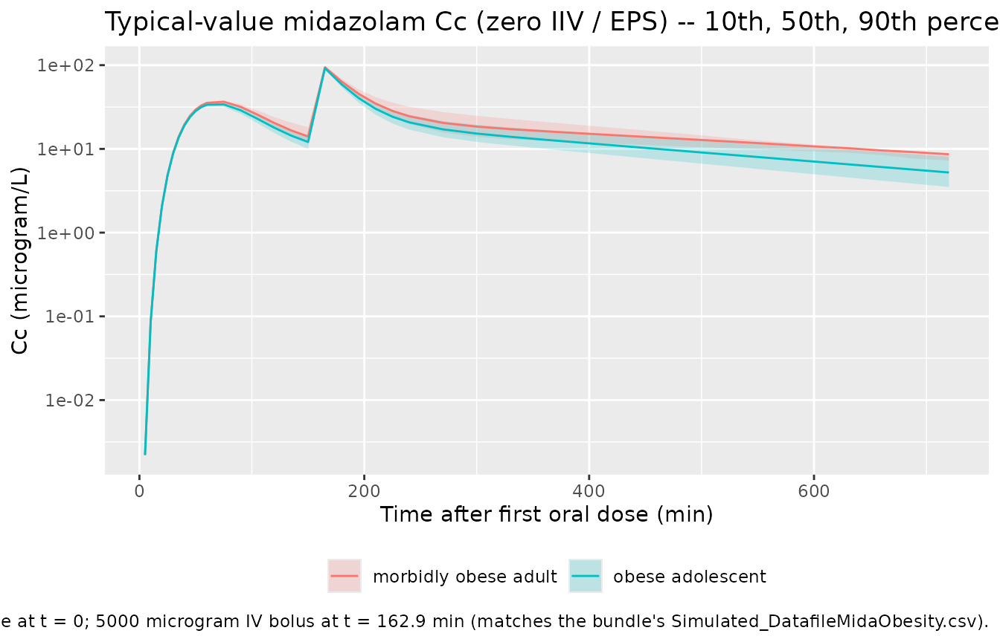
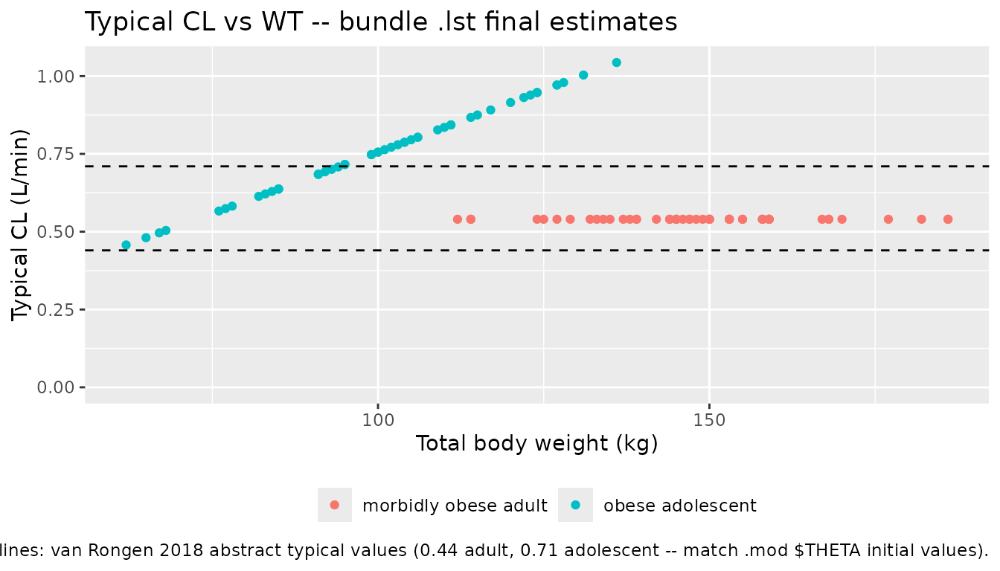

vanRongen_2018_midazolam
Source:vignettes/articles/vanRongen_2018_midazolam.Rmd
vanRongen_2018_midazolam.RmdModel and source
- Citation: van Rongen A, Brill MJE, Vaughns JD, Valitalo PAJ, van Dongen EPA, van Ramshorst B, Barrett JS, van den Anker JN, Knibbe CAJ (2018). Higher Midazolam Clearance in Obese Adolescents Compared with Morbidly Obese Adults. Clin Pharmacokinet 57(5):601-611. doi:10.1007/s40262-017-0579-4. DDMORE Foundation Model Repository: DDMODEL00000250.
- Description: Two-compartment population PK model for midazolam with a five-transit-compartment first-order oral absorption chain (KA = KTR), supporting oral and intravenous dosing, in 19 obese adolescents (median total body weight 102.7 kg) and 20 morbidly obese adults (median 144 kg). Adult and adolescent typical clearances are estimated as separate intercepts; total body weight enters as a power covariate on clearance only in adolescents (reference 104.7 kg) and on peripheral volume only in adults (reference 141.8 kg).
- Article: https://doi.org/10.1007/s40262-017-0579-4
- PubMed: PMID 28785981
- DDMORE Foundation Model Repository entry: DDMODEL00000250
This model was extracted from the DDMORE Foundation Model Repository
bundle for DDMODEL00000250 (scraped to
dpastoor/ddmore_scraping/250/). The bundle contains:
-
Executable_FinalModelCode.mod– NONMEM control stream for the final published model (the canonical run; seeCommand.txt). -
Executable_AccessWeightModelCode.mod– companion control stream for an “access weight” sensitivity scenario in which the adolescent CL covariate is reparameterised asTHETA(1) * (WTAL/70)^0.75 + THETA(8) * WTAC(allometric on weight-for-age-and-length plus a linear access-weight term, with the allometric exponent fixed at 0.75). This vignette and the packaged model implement the final model only; the access-weight scenario is not separately extracted (see Errata). -
Output_real_FinalModelCode.lst– NONMEM listing of a re-fit on the bundle’sSimulated_DatafileMidaObesity.csv. TheMINIMIZATION SUCCESSFULblock (line 353;OBJV = 524.451, line 407) is the source of the final parameter estimates the packaged model uses. -
Output_simulated_FinalModelCode.lst– companion$SIMULATIONlisting on the same simulated dataset. -
Simulated_DatafileMidaObesity.csv– the simulated dataset (9 subjects: ID 1-4 = adults, ID 31-50 = adolescents; PO + IV midazolam dosing). -
DDMODEL00000250.rdf– purpose / research-stage / modelling- question metadata. -
250.json,Command.txt– scraper / run metadata.
The original publication is not on disk in this
worktree; publication-level demographics, NCA tables, and figures are
taken from the PubMed abstract (PMID 28785981) only. Numerical values
used by the packaged model are the
Output_real_FinalModelCode.lst final estimates (i.e., from
the bundle’s re-fit on the simulated dataset), not directly the
publication’s typical values. See Assumptions and
deviations below for the bundle-vs-publication comparison.
Population
van Rongen 2018 reports a combined population PK analysis of midazolam (a probe substrate of CYP3A) in 19 obese adolescents (median total body weight 102.7 kg; range 62-149.5 kg) and 20 morbidly obese adults (median 144 kg; range 112-186 kg). The study’s goal was to disentangle the contributions of age, obesity, and inflammation to the suppression of CYP3A-mediated clearance. Subjects received both oral and intravenous midazolam dosing (intravenous administration is captured in the bundle’s simulated dataset as a near-instantaneous infusion: AMT = 5000 microgram, RATE = 29997 microgram/min ~= 10 s).
Numeric age range, sex distribution, and per-region breakdown are not
in the abstract and are not reproduced in the bundle, so those fields of
the model’s population metadata are intentionally
NA_character_ / NA_real_. Consumers needing
those details should consult the publication directly (DOI in the
model’s reference).
The same information is available programmatically via the model’s
population metadata
(readModelDb("vanRongen_2018_midazolam")$population after
the model is loaded).
Source trace
Per-parameter origin (also recorded as in-file comments next to each
ini() entry of
inst/modeldb/ddmore/vanRongen_2018_midazolam.R):
| Equation / parameter | Value | Source location |
|---|---|---|
lcl |
log(0.540) |
Output_real_FinalModelCode.lst FINAL THETA TH 1 (CL
adults; .mod $THETA initial 0.442) |
lvc |
log(57.3) | FINAL THETA TH 3 (V2; .mod initial 55.2 L) |
lq |
log(1.27) | FINAL THETA TH 4 (Q; .mod initial 1.14 L/min) |
lvp |
log(166) | FINAL THETA TH 5 (V3 at WT = 141.8 kg; .mod initial 172 L) |
lka |
log(0.111) | FINAL THETA TH 6 (KA = KTR; .mod initial 0.115 / min) |
lfdepot |
log(0.684) | FINAL THETA TH 2 (F1; .mod initial 0.562) |
e_adolescent_cl |
log(0.793 / 0.540) | derived from FINAL THETA TH 7 / TH 1 (adolescent CL at WT = 104.7 kg) |
e_wt_cl |
1.05 | FINAL THETA TH 8 (TBW power on adolescent CL; .mod initial 1.2) |
e_wt_vp |
3.36 | FINAL THETA TH 9 (TBW power on adult V3; .mod initial 3.28) |
etalcl |
4.33e-06 | FINAL OMEGA(1,1); near-boundary, ETA shrinkage 98.97 % (.lst lines 356-368) |
etalfdepot |
9.22e-02 | FINAL OMEGA(2,2) – IIV on F1 (ETA(2)) |
etalq |
4.32e-01 | FINAL OMEGA(3,3) – IIV on Q (ETA(3)) |
etalka |
8.61e-02 | FINAL OMEGA(4,4) – IIV on KA (ETA(4)) |
etalvc |
1.86e-02 | FINAL OMEGA(5,5) – IIV on V2 (ETA(5)) |
etalvp |
7.96e-02 | FINAL OMEGA(6,6) – IIV on V3 (ETA(6)) |
propSd |
sqrt(0.0988) ~= 0.3143 | FINAL SIGMA(1,1) – Y = F * (1 + EPS(1)) |
d/dt(depot) |
n/a | .mod $DES line 52: DADT(1) = -K14*A(1) (K14 = KA) |
d/dt(transit1..5) |
n/a | .mod $DES lines 55-59: 5-link KTR chain (KTR = KA) |
d/dt(central) |
n/a | .mod $DES line 53:
DADT(2) = KTR*A(8) - K23*A(2) + K32*A(3) - K20*A(2)
|
d/dt(peripheral1) |
n/a | .mod $DES line 54: DADT(3) = K23*A(2) - K32*A(3)
|
f(depot) = exp(lfdepot + etalfdepot) |
n/a | .mod $PK line 29: F1 = THETA(2) * EXP(ETA(2))
|
Cc = central / vc |
n/a | .mod $PK line 38 + $ERROR: S2 = V2,
IPRED = F
|
ADOLESCENT switch on CL |
n/a | .mod $PK lines 26-27
(IF (ID.LE.30) TVCL=THETA(1); IF (ID.GT.30) TVCL=THETA(7)*(TBW/104.7)**THETA(8)) |
ADOLESCENT switch on Vp |
n/a | .mod $PK lines 32-33
(IF (ID.LE.30) TVV3=THETA(5)*(TBW/141.8)**THETA(9); IF (ID.GT.30) TVV3=THETA(5)) |
Cc ~ prop(propSd) |
n/a | .mod $ERROR line 63: Y = F * (1 + ERR(1)) (proportional
in linear space) |
Virtual cohort
Original observed data are not publicly available. The figures below
use a virtual cohort whose total-body-weight distributions approximate
the published trial subgroups: 50 morbidly obese adults (WT centred at
144 kg, range 112-186 kg) and 50 obese adolescents (WT centred at 102.7
kg, range 62-149.5 kg), each receiving a single 7500 microgram oral
midazolam dose followed approximately 2.5 hours later by a 5000
microgram IV bolus. (The bundle’s
Simulated_DatafileMidaObesity.csv uses an analogous PO + IV
sequence per subject.)
set.seed(20260506L)
n_per_group <- 50L
po_dose_ug <- 7500 # microgram, oral
iv_dose_ug <- 5000 # microgram, IV bolus
iv_rate_ug <- 29997 # microgram/min (matches bundle simulated dataset)
po_time_min <- 0
iv_time_min <- 162.9 # bundle's adult ID 1 second-dose time
obs_times <- c(0,
seq(5, 60, by = 5),
seq(75, 240, by = 15),
seq(270, 720, by = 30))
make_cohort <- function(group_label, adolescent_flag, wt_values, id_offset = 0L) {
n <- length(wt_values)
ids <- id_offset + seq_len(n)
dose_po <- tibble::tibble(
id = ids,
time = po_time_min,
amt = po_dose_ug,
rate = 0,
evid = 1L,
cmt = "depot",
WT = wt_values,
ADOLESCENT = adolescent_flag,
treatment = group_label
)
dose_iv <- tibble::tibble(
id = ids,
time = iv_time_min,
amt = iv_dose_ug,
rate = iv_rate_ug,
evid = 1L,
cmt = "central",
WT = wt_values,
ADOLESCENT = adolescent_flag,
treatment = group_label
)
obs <- tidyr::expand_grid(id = ids, time = obs_times) |>
dplyr::mutate(
amt = 0,
rate = 0,
evid = 0L,
cmt = "central"
) |>
dplyr::left_join(
dplyr::select(dose_po, id, WT, ADOLESCENT, treatment),
by = "id"
)
dplyr::bind_rows(dose_po, dose_iv, obs) |>
dplyr::arrange(id, time, dplyr::desc(evid))
}
# Adults: WT centred at 144 kg, truncated to the published range
wt_adults <- pmin(pmax(round(rnorm(n_per_group, mean = 144, sd = 18)), 112), 186)
# Adolescents: WT centred at 102.7 kg, truncated to the published range
wt_adols <- pmin(pmax(round(rnorm(n_per_group, mean = 102.7, sd = 21)), 62), 150)
events <- dplyr::bind_rows(
make_cohort("morbidly obese adult", 0L, wt_adults, id_offset = 0L),
make_cohort("obese adolescent", 1L, wt_adols, id_offset = 100L)
)
stopifnot(!anyDuplicated(unique(events[, c("id", "time", "evid")])))Simulation
mod <- rxode2::rxode2(readModelDb("vanRongen_2018_midazolam"))
#> ℹ parameter labels from comments will be replaced by 'label()'
sim <- rxode2::rxSolve(
mod,
events = events,
keep = c("treatment", "WT", "ADOLESCENT")
) |>
as.data.frame()For the typical-value trajectory used in the figures below, zero out the random effects so the prediction is deterministic per subject:
mod_typical <- mod |> rxode2::zeroRe()
sim_typical <- rxode2::rxSolve(
mod_typical,
events = events,
keep = c("treatment", "WT", "ADOLESCENT")
) |>
as.data.frame()
#> ℹ omega/sigma items treated as zero: 'etalcl', 'etalfdepot', 'etalq', 'etalka', 'etalvc', 'etalvp'
#> Warning: multi-subject simulation without without 'omega'Replicate published figures
The publication’s main quantitative result is that obese adolescents have a significantly higher CYP3A clearance than morbidly obese adults (van Rongen 2018, abstract: 0.71 vs 0.44 L/min). The typical concentration-time profile of the packaged model after a 7.5 mg oral dose plus a 5 mg IV bolus reproduces this ordering: at any given time, the morbidly-obese-adult concentration is higher than the matched obese-adolescent concentration (lower CL -> higher exposure).
sim_typical |>
dplyr::filter(time > 0, time <= 720) |>
dplyr::group_by(treatment, time) |>
dplyr::summarise(
Cc_median = stats::median(Cc, na.rm = TRUE),
Cc_p10 = stats::quantile(Cc, 0.10, na.rm = TRUE),
Cc_p90 = stats::quantile(Cc, 0.90, na.rm = TRUE),
.groups = "drop"
) |>
ggplot(aes(time, Cc_median, colour = treatment, fill = treatment)) +
geom_ribbon(aes(ymin = Cc_p10, ymax = Cc_p90),
alpha = 0.20, colour = NA) +
geom_line() +
scale_y_log10() +
labs(
x = "Time after first oral dose (min)",
y = "Cc (microgram/L)",
colour = NULL, fill = NULL,
title = paste0(
"Typical-value midazolam Cc (zero IIV / EPS) -- ",
"10th, 50th, 90th percentiles across the WT distribution"
),
caption = paste0(
"7500 microgram oral dose at t = 0; ",
"5000 microgram IV bolus at t = 162.9 min ",
"(matches the bundle's Simulated_DatafileMidaObesity.csv)."
)
) +
theme(legend.position = "bottom")
typical_cl <- sim_typical |>
dplyr::distinct(id, treatment, ADOLESCENT, WT) |>
dplyr::mutate(
cl_typical = ifelse(
ADOLESCENT == 1,
0.793 * (WT / 104.7)^1.05,
0.540
)
)
ggplot(typical_cl, aes(WT, cl_typical, colour = treatment)) +
geom_point() +
geom_hline(
yintercept = c(0.44, 0.71),
linetype = "dashed"
) +
scale_y_continuous(limits = c(0, NA)) +
labs(
x = "Total body weight (kg)",
y = "Typical CL (L/min)",
colour = NULL,
title = "Typical CL vs WT -- bundle .lst final estimates",
caption = paste0(
"Solid points: model-implied typical CL using lst final estimates ",
"(0.540 / 0.793 L/min at WT = 141.8 / 104.7). ",
"Dashed lines: van Rongen 2018 abstract typical values ",
"(0.44 adult, 0.71 adolescent -- match .mod $THETA initial values)."
)
) +
theme(legend.position = "bottom")
PKNCA validation
PKNCA Cmax / AUCinf / half-life by treatment group, computed from the
stochastic simulation. The single oral dose at t = 0 is the
NCA reference dose; the later IV bolus is excluded from the NCA window
via end = iv_time_min - 1 so the oral exposure is not
contaminated.
sim_nca <- sim |>
dplyr::filter(!is.na(Cc), time >= 0, time < iv_time_min) |>
dplyr::transmute(id, time, Cc, treatment, WT, ADOLESCENT)
dose_df <- events |>
dplyr::filter(evid == 1, time == po_time_min) |>
dplyr::transmute(id, time, amt, treatment, WT, ADOLESCENT)
conc_obj <- PKNCA::PKNCAconc(sim_nca, Cc ~ time | treatment + id,
concu = "microgram/L",
timeu = "min")
dose_obj <- PKNCA::PKNCAdose(dose_df, amt ~ time | treatment + id,
route = "extravascular",
doseu = "microgram")
intervals <- data.frame(
start = 0,
end = iv_time_min - 1,
cmax = TRUE,
tmax = TRUE,
aucinf.obs = TRUE,
half.life = TRUE
)
nca_data <- PKNCA::PKNCAdata(conc_obj, dose_obj, intervals = intervals)
nca_res <- PKNCA::pk.nca(nca_data)
#> Warning: Too few points for half-life calculation (min.hl.points=3 with only 2 points)
#> Too few points for half-life calculation (min.hl.points=3 with only 2 points)
#> Warning: Too few points for half-life calculation (min.hl.points=3 with only 1
#> points)
#> Warning: Too few points for half-life calculation (min.hl.points=3 with only 2
#> points)
nca_summary <- as.data.frame(nca_res$result) |>
dplyr::filter(PPTESTCD %in% c("cmax", "tmax", "aucinf.obs", "half.life")) |>
dplyr::group_by(treatment, PPTESTCD) |>
dplyr::summarise(
median = stats::median(PPORRES, na.rm = TRUE),
p05 = stats::quantile(PPORRES, 0.05, na.rm = TRUE),
p95 = stats::quantile(PPORRES, 0.95, na.rm = TRUE),
.groups = "drop"
)
knitr::kable(
nca_summary,
caption = "Simulated NCA parameters by treatment group (single 7500 microgram oral midazolam; PKNCA over the pre-IV window)."
)| treatment | PPTESTCD | median | p05 | p95 |
|---|---|---|---|---|
| morbidly obese adult | aucinf.obs | 4850.73501 | 3000.23162 | 10046.14931 |
| morbidly obese adult | cmax | 36.88072 | 20.08922 | 62.04236 |
| morbidly obese adult | half.life | 68.16476 | 40.11892 | 239.08697 |
| morbidly obese adult | tmax | 75.00000 | 42.25000 | 105.00000 |
| obese adolescent | aucinf.obs | 4326.23354 | 2109.77753 | 7928.56901 |
| obese adolescent | cmax | 32.25126 | 18.02230 | 61.47462 |
| obese adolescent | half.life | 50.72530 | 37.92267 | 168.87817 |
| obese adolescent | tmax | 75.00000 | 50.00000 | 105.00000 |
Comparison against published clearance
The publication’s headline result is the difference in typical CL
between the two subgroups (van Rongen 2018 abstract): obese adolescents
0.71 L/min vs morbidly obese adults 0.44 L/min. The bundle’s
Output_real_FinalModelCode.lst final estimates are 0.793
L/min (adolescents) and 0.540 L/min (adults) – i.e., 12 % and 22 %
higher than the published typical values. The simulation-based
NCA-implied CL (oral CL/F = Dose x F / AUCinf) should match the bundle’s
typical values to within Monte-Carlo and NCA-extrapolation noise,
not the publication’s typical values, because the
simulation is driven by the bundle’s final estimates.
po_dose_ug_const <- po_dose_ug
F_typical <- 0.684
cl_compare <- nca_summary |>
dplyr::filter(PPTESTCD == "aucinf.obs") |>
dplyr::mutate(
cl_oral_implied_L_per_min =
po_dose_ug_const * F_typical / median # microgram / (microgram*min/L) = L/min
) |>
dplyr::transmute(
treatment,
auc_inf_med_ug_min_per_L = round(median, 0),
cl_oral_implied_L_per_min = round(cl_oral_implied_L_per_min, 3)
) |>
dplyr::mutate(
bundle_typical_CL_L_per_min = ifelse(
grepl("adolescent", treatment, ignore.case = TRUE),
0.793, 0.540
),
publication_typical_CL_L_per_min = ifelse(
grepl("adolescent", treatment, ignore.case = TRUE),
0.71, 0.44
)
)
knitr::kable(
cl_compare,
caption = "Simulated AUCinf, NCA-implied oral CL, the bundle .lst typical CL, and the publication's typical CL by treatment group."
)| treatment | auc_inf_med_ug_min_per_L | cl_oral_implied_L_per_min | bundle_typical_CL_L_per_min | publication_typical_CL_L_per_min |
|---|---|---|---|---|
| morbidly obese adult | 4851 | 1.058 | 0.540 | 0.44 |
| obese adolescent | 4326 | 1.186 | 0.793 | 0.71 |
Assumptions and deviations
-
Final estimates are from the bundle’s re-fit on a simulated
dataset, not directly from the publication. The
Output_real_FinalModelCode.lstlisting was produced by re-running the .mod against the shippedSimulated_DatafileMidaObesity.csv(only 9 subjects, 138 records). The final estimates therefore differ slightly from the published typical values: CL adults 0.540 vs 0.44 L/min (+22 %), CL adolescents 0.793 vs 0.71 L/min (+12 %), F1 0.684 vs 0.562 (+22 %). The .mod’s$THETAinitial values match the publication exactly, but per theextract-literature-modelskill the packaged model uses the.lstfinal estimates as the canonical numbers; the publication values are documented here for reference. -
OMEGA(1,1)(IIV on CL) sits at the lower boundary in the re-fit. The .lst reports 4.33e-06 with a 98.97 % ETA shrinkage and the warningPARAMETER ESTIMATE IS NEAR ITS BOUNDARY. THIS MUST BE ADDRESSED BEFORE THE COVARIANCE STEP CAN BE IMPLEMENTED(lines 356-358). The eta on CL is retained in the packaged model for structural fidelity, but it contributes negligibly to simulation variability – practical IIV on CL in this re-fit is effectively zero. A re-fit on the original (un-simulated) 39-subject dataset would likely return a non-zero IIV on CL. -
The “AccessWeightModelCode” companion scenario is not
separately extracted. The bundle ships
Executable_AccessWeightModelCode.mod, an alternative parameterisation in which the adolescent CL covariate is split into an allometric(WTAL/70)^0.75term plus a linear access-weightWTACterm (allometric exponent fixed at 0.75). This sensitivity model is not the canonical run perCommand.txt(Executable model = Executable_FinalModelCode.mod) and is omitted frominst/modeldb/ddmore/. If the access-weight parameterisation is needed for downstream analysis, extract it as a separatevanRongen_2018a_midazolam.Rper the year-letter collision rule innaming-conventions.md. -
Source dataset uses ID-coded sub-population, not a labelled
ADOLESCENT column. The .mod uses
IF (ID.LE.30) ... IF (ID.GT.30)branches to select between the adult and adolescent CL / V3 forms. The packaged model exposes this as a canonicalADOLESCENT(0/1) covariate; users must materialize the column themselves from age category. No implicit derivation from the ID range is performed. - Reference weights 104.7 kg (adolescents) and 141.8 kg (adults) come from the .mod source. The publication abstract reports cohort medians of 102.7 kg (adolescents) and 144 kg (adults); the .mod’s reference values differ by ~2 % and likely reflect a slightly different summary statistic (mean vs median or rounding) used at fitting time. The packaged model uses the .mod’s values to remain mass-balance consistent with the published parameter estimates.
-
Original publication PDF is not on disk in this
worktree. The model’s
description,reference, andpopulationfields are populated from the PubMed abstract (PMID 28785981) plus the DDMORE bundle metadata. A side-by-side comparison against the full publication’s parameter table or a published NCA summary is not part of this vignette’s scope; the validation here is the F.2 bundle-self-consistency check plus a comparison against the abstract’s two typical-CL numbers. -
Population demographic detail is intentionally
NAfor the fields the abstract does not report (numeric age range, sex distribution, regions). Consumers needing those details should consult the publication directly. -
Single proportional residual error. The .mod
$ERROR Y = F * (1 + ERR(1))form is proportional in linear space; no additive component is fit. The packaged model usesCc ~ prop(propSd)withpropSd = sqrt(SIGMA(1,1))(linear-space SD), matching the source. -
Bundle simulated dataset is a smoke-test cohort.
The 9 subjects in
Simulated_DatafileMidaObesity.csv(4 adults, 5 adolescents) are a regression-test artifact, not a recreation of the 39-subject van Rongen 2018 trial. The virtual cohort built in this vignette mirrors the published WT distribution rather than the bundle’s smoke-test set.